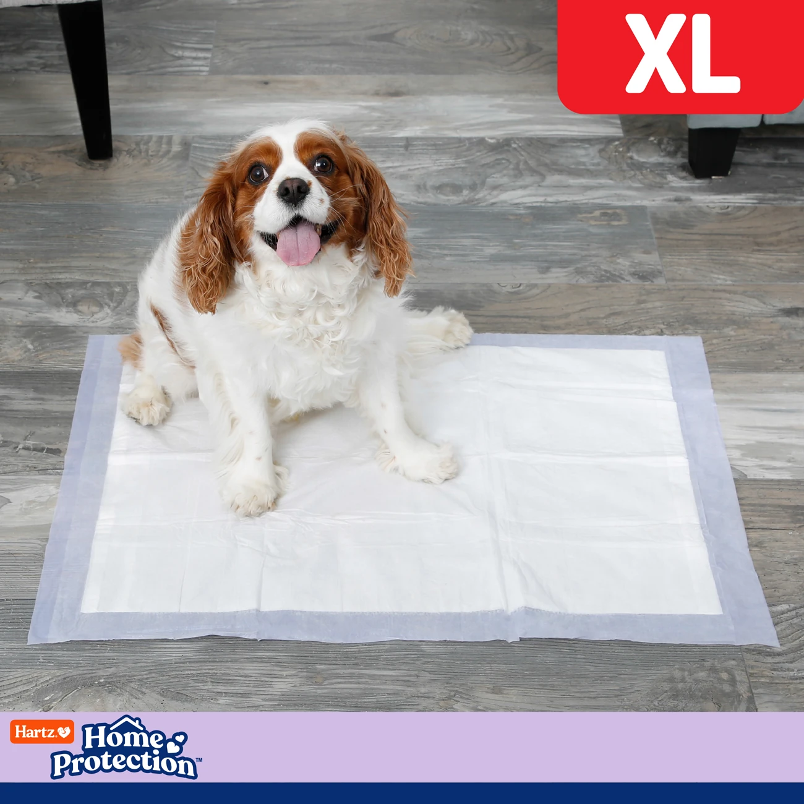
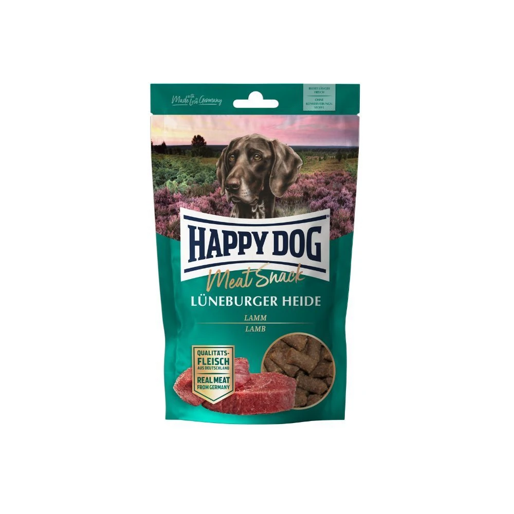

Care Guides
Everything you need to keep your Pomeranian or Cavalier King Charles Spaniel happy, healthy and thriving.
Cavalier King Charles Spaniel Care

Grooming
Cavaliers have a silky medium-length coat with feathering on ears, chest, legs and tail. Brush 3–4 times per week to prevent tangles and matting. Use a soft bristle brush followed by a metal comb. Pay close attention to ear feathering. This is where mats form most easily and cause the most discomfort.
Bathe every 3–4 weeks with a gentle hypoallergenic shampoo. Always blow-dry and ensure the ears are thoroughly dried. Damp ears are prone to yeast infections. Long ears need weekly inspection and cleaning. Wipe the inner ear flap with a cotton ball dampened with veterinarian-approved ear cleaner.
Trim nails monthly. Light trimming around paws and ears maintains a tidy appearance. Avoid heavy scissoring to preserve breed type. Brush teeth regularly; dental disease is very common in Cavaliers.


Nutrition
Every puppy leaves us with a gift bag of Royal Canin Puppy Small kibble. Blend it gradually with your chosen food over 7–10 days to avoid digestive upset. For adults, we feed and recommend Josera Adult Mini Lamb: grain-free, monoprotein, lamb as the sole animal protein source.
Most adults do well on ¾ to 1 cup of kibble per day, divided into two meals. Always weigh portions rather than estimating. Cavaliers are highly food-motivated and prone to obesity. Excess weight dramatically increases the risk of heart disease progression.
Avoid foods toxic to dogs: grapes, raisins, onions, chocolate and xylitol. Always provide access to fresh, clean water.


Exercise & Walking
Cavaliers are adaptable: they love a good walk but are equally happy on a quiet afternoon on the sofa. Around 45–60 minutes of daily exercise is ideal for an adult. They love sniffing walks (always allow them to explore!), fetch and socialising with other dogs.
Cavaliers do not tolerate extreme heat well. In summer, exercise in the early morning or evening and always ensure shade and water are available. Cavaliers should never be off-lead in an unsecured area. Their spaniel instinct means they can disappear chasing a scent in seconds.
A well-fitted harness is more comfortable for walks than a collar and avoids any pressure on the throat.


Health
Mitral Valve Disease (MVD) is the most significant health concern. A heart murmur may develop from middle age. Annual cardiac examinations by a cardiologist are strongly recommended from age 2–3. Syringomyelia (SM) and Chiari-like Malformation (CM) affect some Cavaliers. Reputable breeders MRI screen before breeding to minimise this risk.
Eye conditions (cataracts, retinal problems) can occur. Annual eye examinations are advised. Apply parasite prevention monthly: we use Frontline Combo Spot On year-round.
Cavaliers do not do well if left alone for long periods. Separation anxiety can develop. Gradual alone-time training and crate introduction can help. Schedule annual vet check-ups and keep vaccinations and deworming current.

Training & Socialisation
Cavaliers are gentle, eager to please and highly trainable. They respond best to positive reinforcement. Harsh corrections are unnecessary and counterproductive. Keep training sessions short (10–15 minutes) and fun. Cavaliers thrive with consistency and routine.
Socialise early and widely: introduce to different people, dogs, sounds and environments from the very first weeks. They get along beautifully with children, other dogs and even cats when introduced properly.
House-training is straightforward with crate training and a consistent schedule. Training pads help during the early weeks.
Heart Health First
MVD is nearly universal in the breed with age. Annual cardiologist checks from age 2–3 allow early detection and careful management.
Weekly Ear Care
Long feathered ears trap moisture and debris. Inspect and gently clean weekly to prevent yeast infections and discomfort.
Never Alone Too Long
Cavaliers are people-dogs. Regular long periods alone can cause anxiety. Consider a companion dog if your schedule is demanding.
Lead Discipline is Essential
A solid recall cannot be trusted outdoors. Always use a lead or a securely fenced area, their nose overrides everything.
Pomeranian Care
Grooming
Pomeranians have a thick double coat: a soft dense undercoat and a longer harsher outer coat. Daily brushing prevents matting and controls shedding. Use a slicker brush first, then finish with a wide-tooth metal comb, always working down to the skin rather than just the surface.
Bathe every 3–4 weeks with a hypoallergenic dog shampoo. Thoroughly blow-dry afterwards. Damp undercoat causes skin problems. Between baths a waterless shampoo spray freshens the coat without water.
Arrange professional grooming, including scissoring, a sanitary trim and ear tidying, every 6–8 weeks. Trim nails monthly with either clippers or a grinder. Clean ears weekly.
Brush teeth at least 3× per week; small breeds are highly prone to dental disease.
Nutrition
Every puppy leaves us with a gift bag of Royal Canin Puppy Small kibble. Use it to blend gradually with your chosen food over 7–10 days to avoid digestive upset. For adults, we feed and recommend Josera Adult Mini Lamb: a grain-free, monoprotein German-quality kibble with lamb as the sole animal protein source.
Adults typically eat ¼ to ½ cup per day, split into two meals. Adjust for your dog's weight, age and activity level. Pomeranians are prone to hypoglycaemia, especially as puppies. Never leave them too long between meals.
Limit treats to no more than 10% of daily calories. Obesity puts serious strain on joints and heart. Always provide access to fresh, clean water.


Exercise & Walking
Despite their small size, Pomeranians are energetic and curious. Aim for at least 30 minutes of daily activity, ideally spread over two shorter walks. They enjoy indoor puzzle toys and short training sessions just as much as outdoor walks.
Always use a harness, not a collar because Pomeranians are prone to tracheal collapse and collar pressure worsens this. A retractable lead like the Flexi gives them freedom to explore while keeping them safe in open areas.
Avoid strenuous exercise in extreme heat because their thick coat makes them prone to overheating. Walk in the cooler parts of the day in summer. Off-leash play in a securely fenced garden is great, but always supervise. Poms can squeeze through surprisingly small gaps.
Health
Luxating patella (slipping kneecap) is common in small breeds. Maintain a healthy weight and avoid excessive jumping from height. Tracheal collapse can occur. Always use a harness and avoid any pressure on the throat.
Black Skin Disease (Alopecia X) can cause coat loss in males. Apply parasite prevention monthly: we use Frontline Combo Spot On for flea, tick and lice protection.
Schedule annual vet check-ups including cardiac evaluation, eye certification and patella assessment. Keep vaccinations and deworming up to date year-round.
Training & Socialisation
Pomeranians are intelligent and quick learners, but they can be stubborn. Short, consistent sessions with positive reinforcement only get the best results. Socialise early and widely, a well-socialised Pom is confident and adaptable around people, dogs and different environments.
Heat Sensitivity
Pomeranians overheat quickly. In summer limit walks to early morning and evening. Never leave them in a hot car.
Dental Routine
Small breeds are highly prone to tartar build-up. Start brushing from puppyhood and supplement with dental chews like Dentastix.
Mental Stimulation
Puzzle feeders, scent games and trick training prevent boredom and destructive behaviour in this clever breed.
Barking Management
Pomeranians can be vocal. Teach a "quiet" command early and consistently, do not inadvertently reward barking with attention.
Questions About Your Dog's Care?
We are always happy to share our experience with our puppy owners and breed enthusiasts.
Contact Us